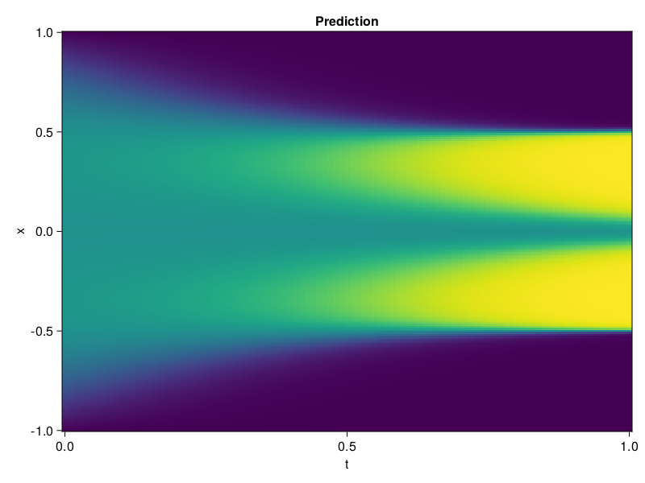

Allen-Cahn Equation with Sequential Training
In this tutorial we are going to solve the Allen-Cahn equation with periodic boundary condition from $t=0$ to $t=1$. The traning process is split into four stages, namely $t\in [0,0.25]$, $t\in [0.0,0.5]$, $t\in [0.0,0.75]$ and $t\in [0.0, 1.0]$.
using ModelingToolkit, IntervalSets
using Sophon
using Optimization, OptimizationOptimJL
@parameters t, x
@variables u(..)
Dₓ = Differential(x)
Dₓ² = Differential(x)^2
Dₜ = Differential(t)
eq = Dₜ(u(x, t)) - 0.0001 * Dₓ²(u(x, t)) + 5 * u(x,t) * (abs2(u(x,t)) - 1.0) ~ 0.0
domain = [x ∈ -1.0..1.0, t ∈ 0.0..0.25]
bcs = [u(x,0) ~ x^2 * cospi(x),
u(-1,t) ~ u(1,t)]
@named allen = PDESystem(eq, bcs, domain, [x, t], [u(x, t)])\[ \begin{align} - 0.0001 \frac{\mathrm{d}}{\mathrm{d}x} \frac{\mathrm{d}}{\mathrm{d}x} u\left( x, t \right) + 5 \left( -1 + \left|u\left( x, t \right)\right|^{2} \right) u\left( x, t \right) + \frac{\mathrm{d}}{\mathrm{d}t} u\left( x, t \right) =& 0 \end{align} \]
Then we define the neural net, the sampler, and the training strategy.
chain = FullyConnected(2, 1, tanh; hidden_dims=16, num_layers=4)
pinn = PINN(chain)
sampler = QuasiRandomSampler(500, (300, 100))
strategy = NonAdaptiveTraining(1, (50, 1))
prob = Sophon.discretize(allen, pinn, sampler, strategy)OptimizationProblem. In-place: true
u0: ComponentVector{Float64}(layer_1 = (weight = [0.44039633870124817 0.587984561920166; 0.004675924312323332 -0.9405866265296936; … ; 1.9038177728652954 2.0245816707611084; 1.7963831424713135 -1.5300302505493164], bias = [0.0; 0.0; … ; 0.0; 0.0;;]), layer_2 = (weight = [-0.26755890250205994 -0.6987231373786926 … -0.28144997358322144 -0.47077614068984985; -0.46519550681114197 0.2102082520723343 … -0.7170014381408691 0.31080248951911926; … ; 0.6519632339477539 -0.5619003176689148 … -0.22782164812088013 0.5461637377738953; -0.3774522542953491 -0.5148282647132874 … -0.39681580662727356 0.431414395570755], bias = [0.0; 0.0; … ; 0.0; 0.0;;]), layer_3 = (weight = [0.583233654499054 0.0018237900221720338 … -0.40206632018089294 0.6212453246116638; 0.5972602963447571 0.7115924954414368 … 0.3186227083206177 -0.5667173266410828; … ; 0.22025832533836365 -0.2681642472743988 … 0.032966818660497665 0.35016390681266785; -0.09766348451375961 -0.4477948546409607 … -0.7104782462120056 0.34802746772766113], bias = [0.0; 0.0; … ; 0.0; 0.0;;]), layer_4 = (weight = [-0.1400541514158249 -0.49614375829696655 … -0.5314508676528931 -0.4519607126712799; -0.3385622501373291 -0.4753342866897583 … 0.11093674600124359 0.4655105471611023; … ; 0.25357168912887573 -0.37985333800315857 … 0.6559739708900452 0.4552789628505707; -0.20821240544319153 -0.7157822847366333 … -0.3521162271499634 -0.663751482963562], bias = [0.0; 0.0; … ; 0.0; 0.0;;]), layer_5 = (weight = [-0.2778821289539337 -0.12279710173606873 … -0.31072962284088135 0.0612790510058403], bias = [0.0;;]))We solve the equation sequentially in time.
function train(allen, prob, sampler, strategy)
bfgs = BFGS()
res = Optimization.solve(prob, bfgs; maxiters=2000)
for tmax in [0.5, 0.75, 1.0]
allen.domain[2] = t ∈ 0.0..tmax
data = Sophon.sample(allen, sampler)
prob = remake(prob; u0=res.u, p=data)
res = Optimization.solve(prob, bfgs; maxiters=2000)
end
return res
end
res = train(allen, prob, sampler, strategy)u: ComponentVector{Float64}(layer_1 = (weight = [0.7672334134450702 0.5973743805091896; -0.17663883870648917 -0.6087199393599787; … ; 1.7194297844898583 1.8234546101845817; 1.8118933244635131 -1.0983276627658611], bias = [-0.717287280458547; -0.6914522414648662; … ; -1.1810996932164899; 1.2541937329288046;;]), layer_2 = (weight = [-0.25755773775026236 -0.9327276497614451 … -0.49619857322451855 -0.44596753834753194; -0.542168234611917 0.11041903669664825 … 0.11452707754157937 0.7001266909784628; … ; 1.2581576048137777 -0.5297396967704379 … -0.1139579544973567 1.3298380771727345; -0.9053006982047909 -0.4744939810131392 … -0.3138795316533217 0.42766258290206133], bias = [0.41252848296462297; 0.33136835044090257; … ; -0.06690942543674055; -0.032095622253990506;;]), layer_3 = (weight = [0.4824179441680873 0.16069650441753502 … -1.1900163995833843 0.7538704010069358; 0.7290009806613663 0.9364652913933128 … 0.5458169215877998 -0.3723283382369431; … ; -0.3213036947526244 -0.3711817573321126 … 0.007209754938685131 0.939021757113759; 0.03336554428796662 -0.49670918998554797 … -1.5347341987983234 0.9022999357249195], bias = [0.32428098455986365; -0.19150167678411628; … ; -0.4945975859705821; 0.17976986891824448;;]), layer_4 = (weight = [-0.8305970887782992 -0.3912397637800145 … -0.4830863612168637 -0.9836001884847171; -0.03455227380761693 -0.3413776567872179 … 0.0195323187001282 0.4303583843136966; … ; 0.41029019689849944 -0.18838534715890176 … 0.7869509062160647 0.6577048699425199; -0.5983374251864158 -0.8787823085094516 … -0.8217778775536818 -1.1895903976235047], bias = [-0.2373695242465702; -0.02320672013387069; … ; 0.03297276078583384; -0.2442876565319601;;]), layer_5 = (weight = [0.5320759564479078 -0.1707424175546461 … 0.32761272256464957 0.34684591596671643], bias = [-0.5188382538037336;;]))Let's plot the result.
using CairoMakie
phi = pinn.phi
xs, ts = [infimum(d.domain):0.01:supremum(d.domain) for d in allen.domain]
axis = (xlabel="t", ylabel="x", title="Prediction")
u_pred = [sum(pinn.phi([x, t], res.u)) for x in xs, t in ts]
fig, ax, hm = heatmap(ts, xs, u_pred', axis=axis)